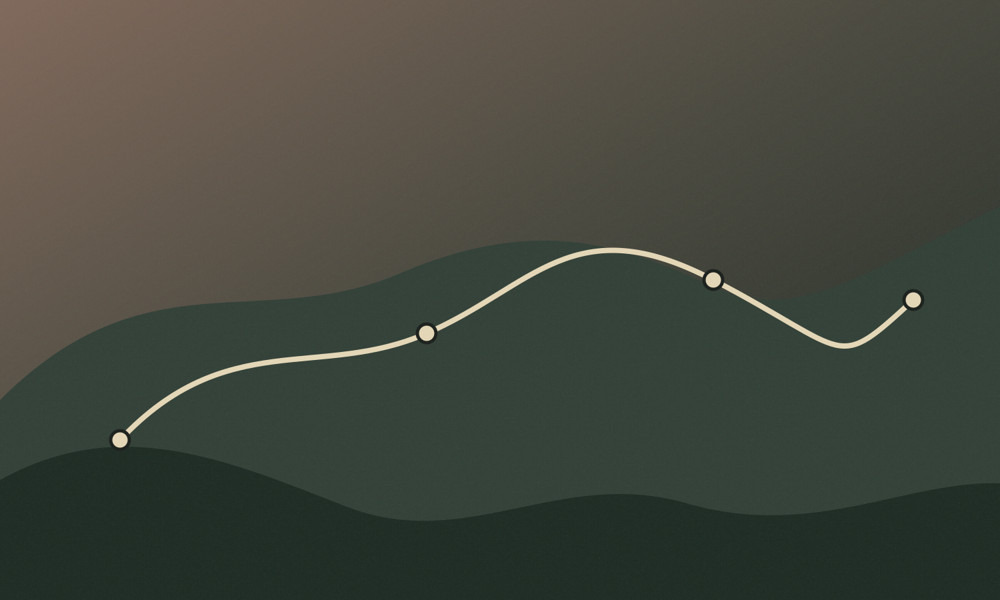

RV-39 + RV-40 · Minha viagemSerra Negra
Serra Negra
em 3 dias.
Uma sequência que organiza o percurso sem esconder as escolhas. Mover uma parada não reconstrói o resto da viagem.
casalritmo equilibradocarrogastronomia + natureza22°C · demo
Dia 01
Ver no calendárioSábado, 12 set.

45 min · parceiro
Café Neblina Alta
Comece sem pressa. A parada está perto do centro e deixa margem antes do próximo deslocamento.

60 min · natureza · fixado
Vale das Araucárias
Parada preservada manualmente. O Travel Engine não deve removê-la numa mudança local.

Tempo livre
Centro, sem obrigação de preencher.
Uma janela proposital para escolher na hora, descansar ou encaixar uma descoberta.

75 min · cultura
Estação Cultural da Serra
Evento de demonstração e alternativa protegida para mudança de clima.